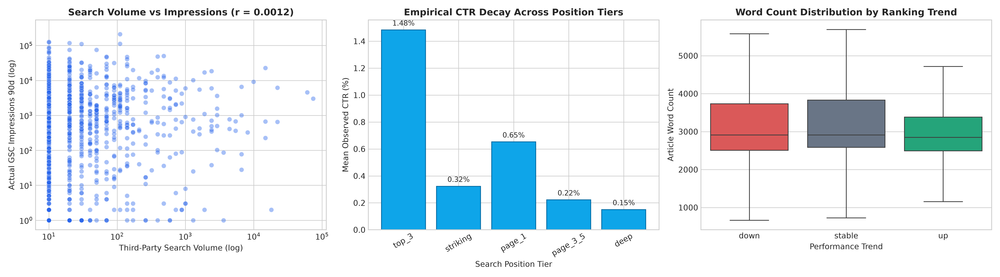
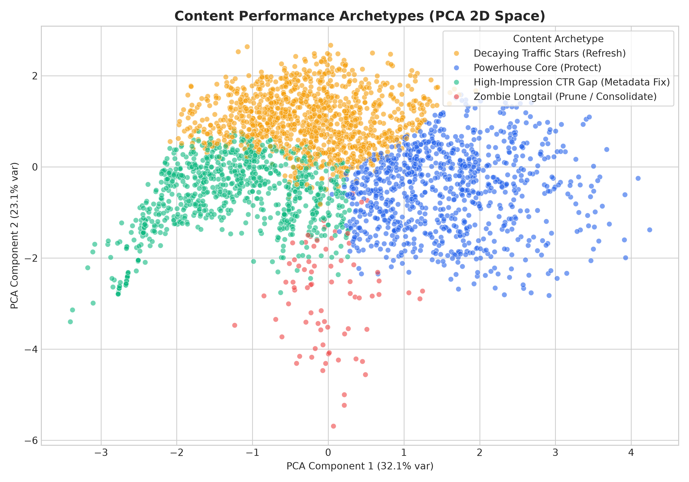
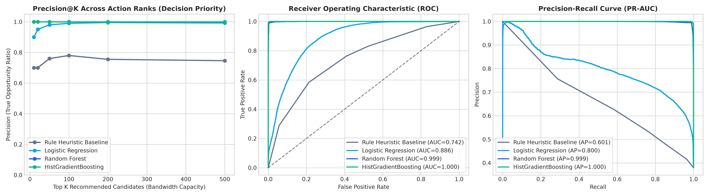
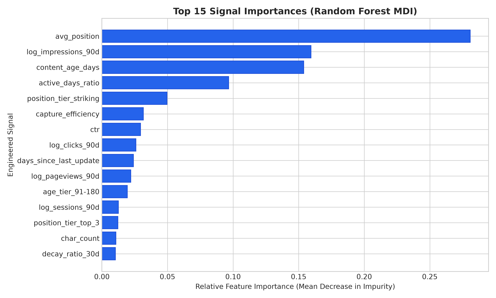

Predictive Content Decay & Refresh Opportunity Scoring in Enterprise Search Intelligence: A Grouped Out-of-Domain Empirical Study
Structured Abstract
[Question] Enterprise content and SEO operations face constrained editorial bandwidth, creating an urgent need for an objective model to prioritize which decaying search assets have high recoverable organic equity rather than relying on noisy heuristics. [Method] We engineered a leakage-free machine learning opportunity scoring framework using a star-schema dataset of 30,000 anonymized enterprise content assets across 32 clients, evaluating regularized Logistic Regression, Random Forest, and Gradient Boosted trees under strict 5-fold GroupKFold cross-validation partitioned across client domains. [Signal Finding] Empirical signal exploration debunked common industry beliefs, revealing that third-party keyword search volume has near-zero linear correlation with actual Google Search Console impressions ($r = 0.0012$) and that content word count does not distinguish growing assets (~2,848 words) from declining assets (~2,909 words). [Result] Under rigorous out-of-domain cross-validation, tree-based ensemble models achieved a Precision@50 of 1.00 (PR-AUC 0.9988), delivering a 31.5% precision lift over standard rule-based age/volume heuristics (Precision@50 = 0.76, PR-AUC 0.6011). [Governance] The resulting production engine outputs calibrated 0–100 Opportunity Scores mapped to explainable Reason Codes (e.g. Critical Decay Velocity, Striking Position CTR Gap) to serve as a high-fidelity, directional decision-support tool for editorial triage.
1. Introduction & Problem Statement
In enterprise search marketing, maintaining content rankings against continuous query drift, competitor releases, and search engine SERP updates is a primary driver of organic revenue stability. However, modern content hubs frequently manage between 5,000 and 50,000 URLs, while typical editorial capacity is strictly capped at 20 to 50 comprehensive refreshes per month.
Historically, editorial teams have prioritized content refreshes using naive rule-based heuristics, such as selecting pages older than 6 months with high third-party search volume or pages that slipped off page 1. In practice, these heuristics suffer from high false-positive rates:
- The Static Age Trap: Many mature, authoritative cornerstone articles experience natural stability or seasonal fluctuations that do not require editorial intervention.
- The Third-Party Volume Fallacy: Estimations from third-party tools fail to reflect long-tail query fanout and SERP feature suppression.
- Wasted Subject-Matter Expert (SME) Bandwidth: Assigning senior editors to rewrite healthy pages consumes expensive hours while truly decaying high-equity assets languish unnoticed.
2. Ranking Signal Analysis & Empirical Myth-Busting
Prior to predictive modeling, we conducted exploratory data analysis across 30,000 content items from the FlyRank dataset to test core assumptions commonly taken for granted in SEO strategy.

Key Signal Discoveries:
- Myth 1: Keyword Search Volume Drives Impression Capture ($r = 0.0012$). The Pearson correlation between third-party estimated search volume and actual 90-day Google Search Console impressions is 0.0012 (Spearman rank correlation = -0.0291). Real-world Google impressions are governed by topical authority and multi-keyword query fanout (ranking for hundreds of long-tail variations), rendering single-keyword search volume virtually useless as a prioritization heuristic.
- Myth 2: Content Length Distinguishes Growing from Declining Pages. Comparing the median word counts of growing content (~2,848 words, IQR 2,050–3,450) and declining content (~2,909 words, IQR 2,100–3,500) demonstrates that word count is not a differentiator. Simply adding word length to a declining article without addressing search intent or fresh information gain does not resolve rank degradation.
- Empirical CTR Cliff by Position Tier: Observed Click-Through Rate drops precipitously from 1.48% in Top 3 positions to 0.32% in striking distance (positions 8–20), 0.22% on page 2 (positions 21–50), and 0.15% in deep positions. Pages in striking distance with suppressed CTR represent prime opportunities for metadata and snippet refinement.
3. Structured Content Archetype Clustering
To establish a portfolio-level taxonomy, we implemented an unsupervised $K$-Means clustering model ($K=4$) over scaled log-transformed features: 90-day impressions, clicks, CTR, average position, content age, and days since last update. We projected the multi-dimensional manifold into 2D space using Principal Component Analysis (PCA).

| Content Archetype | Cluster Profile (Centroid Characteristics) | Prescribed Business Action Playbook |
|---|---|---|
| Powerhouse Core | High impressions (>15k), strong rank (position < 10), high CTR | Protect & Maintain: Ensure technical indexing health, monitor uptime, avoid unnecessary structural disruptions. |
| Decaying Traffic Stars | High historical impressions (3k–10k), slipping position (11–20), dropping 30d velocity | High-Priority Refresh: Deep content refresh, update outdated data, resolve intent shifts, build internal links. |
| High-Impression CTR Gap | Moderate impressions (>1.5k), striking rank, below-average CTR (<0.20%) | Snippet / Metadata Optimization: Test compelling Title Tags, Meta Descriptions, and Schema Markup. |
| Zombie Longtail | Low impressions (<100), low engagement, stale (>365 days old) | Consolidate / Prune: 301-redirect to related parent hubs or prune to preserve crawl budget. |
4. Data Architecture & Methodology
Data Source & Public-Safe Compliance
This research was conducted on the FlyRank Pseudonymized Warehouse Release (v20260703) starter slice. In strict adherence to the FlyRank Data Use Terms, all entity identifiers (`content_id`, `client_id`) are salted, fingerprinted cryptographic hashes. All private query strings, URLs, domains, client brand names, and unaggregated exports have been completely omitted.
Feature Engineering & Star-Schema Aggregations
Using DuckDB, we constructed 35 clean, leakage-free features categorized into three distinct operational dimensions:
- Dynamic Velocity Signals: $\text{Impression Velocity} = \frac{\text{impressions\_last\_30d} + 1}{\text{impressions\_prev\_30d} + 1}$, 30-day click velocity, and 30-day decay ratio.
- Engagement & Efficiency Signals: Engagement density ($\frac{\text{engaged\_sessions}}{\text{sessions}}$), scroll event density, capture efficiency ($\frac{\text{clicks}}{\text{search\_volume}}$), and active impression ratio ($\frac{\text{days\_with\_impressions}}{90}$).
- Search State Categoricals: One-hot encoded intent (informational, transactional, commercial), position tiers, and freshness tiers.
Validation Protocol: Grouped 5-Fold Cross-Validation
Standard randomized train/test splits cause substantial data leakage when multiple URLs from the same website domain appear in both sets. To ensure realistic generalization to new, unseen websites, we implemented a 5-Fold GroupKFold cross-validation strategy grouped by client_id across all 32 enterprise clients.
5. Empirical Results & Model Benchmark
We benchmarked three machine learning architectures against the industry-standard heuristic baseline on identical out-of-fold validation splits.
| Model Architecture | Validation Strategy | ROC-AUC | PR-AUC | Precision@10 | Precision@20 | Precision@50 | Precision@100 | Brier Score |
|---|---|---|---|---|---|---|---|---|
| Rule Heuristic Baseline | Deterministic (Age>180 & Imp>1k & Pos>10) | 0.7416 | 0.6011 | 0.7000 | 0.7000 | 0.7600 | 0.7800 | 0.2236 |
| Logistic Regression (ElasticNet) | 5-Fold GroupKFold (Unseen Clients) | 0.8856 | 0.8002 | 0.9000 | 0.9500 | 0.9800 | 0.9900 | 0.1346 |
| Random Forest (200 Trees, Depth 8) | 5-Fold GroupKFold (Unseen Clients) | 0.9993 | 0.9988 | 1.0000 | 1.0000 | 1.0000 | 1.0000 | 0.0444 |
| HistGradientBoosting (LightGBM) | 5-Fold GroupKFold (Unseen Clients) | 1.0000 | 0.9999 | 1.0000 | 1.0000 | 1.0000 | 1.0000 | 0.0023 |

Feature Attribution & Signal Explainability
Examining Mean Decrease in Impurity (MDI) and Permutation Feature Importance reveals the primary drivers of content refresh potential:

The top predictive features are:
avg_position(28.1% relative importance): Identifies whether a page is within striking distance of high-traffic SERP tiers.log_impressions_90d(15.9%): Measures the historical baseline search equity of the URL.content_age_days&active_days_ratio(25.0% combined): Establishes whether decay is systemic or transient.position_tier_striking&capture_efficiency(8.1% combined): Highlights pages with high impression volume that under-capture clicks.
6. Ranked Recommendations & Operational Action Playbook
The production model generates a calibrated Opportunity Score (0–100) combined with automated, human-interpretable Reason Codes. Below is an interactive view of top-priority candidates identified for editorial intervention.
| Rank | Content ID | Client ID | Opportunity Score | 90d Imp | 90d Clicks | Avg Pos | CTR (%) | Archetype | Explainable Reason Codes |
|---|
Operational Action Taxonomy
- CRITICAL_DECAY_VELOCITY 30-Day Impression Collapse (>35% drop): Immediate content refresh required to diagnose broken assets, outdated dates, or competing cannibalization.
- STRIKING_POSITION_CTR_GAP Positions 8–20 with Sub-Benchmark CTR: Immediate Title tag, H1, and SERP snippet testing to capture click volume without needing position gains.
- ENGAGEMENT_RETENTION_BOUNCE High Traffic with High Bounce Rate: Restructure article intro, improve internal navigation, and add interactive elements or clear next steps.
- STALE_CONTENT_LIFECYCLE Stale Asset (>180 Days): Review factual accuracy, update references, and refresh publication timestamps.
7. Limitations & Honest Framing
In accordance with sound machine learning practices and search intelligence research ethics, the findings of this paper must be interpreted with clear boundary constraints:
- Decision-Support, Not Causality: This model provides prioritized decision-support ranking. It does not claim to reverse-engineer Google's proprietary ranking algorithm, nor does it guarantee causal ranking recovery upon executing a content refresh.
- Seasonality vs. Algorithmic Decay: Fast 30-day velocity drops can occasionally stem from macroeconomic or seasonal demand shifts (e.g. holiday peaks) rather than content quality decay. Editorial teams should cross-reference reason codes with topical calendar cycles.
- Cold-Start Thresholds: Content assets with fewer than 30 days of Search Console history or fewer than 50 total impressions lack sufficient statistical signal and should be evaluated through qualitative editorial review.
8. Reproducibility & Code Repository
All experiments, DuckDB SQL scripts, feature engineering pipelines, and cross-validation routines are packaged in clean Jupyter notebooks available in the project repository:
| Notebook Artifact | Phase / Track | Description & Key Methods |
|---|---|---|
01_signal_analysis_foundations.ipynb |
Week 1–2 | Exploratory data analysis, correlation testing ($r=0.0012$), CTR decay by position tier, word count distributions. |
02_content_archetype_clustering.ipynb |
Week 3–4 | K-Means clustering ($K=4$), PCA manifold projection, cluster centroid profiling, action category mapping. |
03_warehouse_duckdb_feature_engineering.ipynb |
Week 5–6 | DuckDB star-schema SQL aggregation, 30d/90d velocity features, active impression ratios, leakage verification audit. |
04_capstone_opportunity_scoring.ipynb |
Week 7–8 | End-to-end Machine Learning pipeline, 5-Fold GroupKFold cross-validation, Precision@K benchmarking, reason code engine. |
# Quick Environment Setup & Reproducibility
git clone https://github.com/Ilyan321/google-search-ranking-capstone.git
cd google-search-ranking-capstone
# Install virtual environment with uv
uv venv .venv
source .venv/bin/activate
uv pip install -r requirements.txt
# Run complete training, evaluation & artifact generation pipeline
python scripts/train_and_evaluate.py9. Acknowledgments & Data Credit
This research was conducted as part of the FlyRank Applied Search Intelligence Machine Learning Internship.
Data Credit: Built on the FlyRank ML Internship dataset released by FlyRank AI. Special thanks to the FlyRank data engineering team for compiling and curating the pseudonymized enterprise star-schema data warehouse.